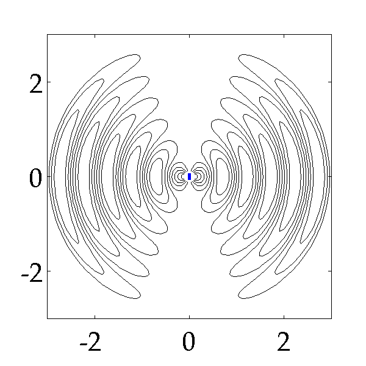

- Thu 14 January 2010
- Plasmonics
- #electromagnetism, #Matlab, #Plasmonics
The electric field from an oscillating dipole is given by:
 , where [tex]\hat{r}[/tex] is the position vector, [tex] \omega [/tex] is the frequency of dipole oscillation, [tex]\textbf{p}[/tex] is the dipole moment. The two terms in the electric field consists of 1) near field (area near to the dipole) and 2) far field (area far from the dipole) contributions. Far field falls of as [tex]\frac{1}{r}[/tex] and the near field falls of by [tex]\frac{1}{r\^3}[/tex].
, where [tex]\hat{r}[/tex] is the position vector, [tex] \omega [/tex] is the frequency of dipole oscillation, [tex]\textbf{p}[/tex] is the dipole moment. The two terms in the electric field consists of 1) near field (area near to the dipole) and 2) far field (area far from the dipole) contributions. Far field falls of as [tex]\frac{1}{r}[/tex] and the near field falls of by [tex]\frac{1}{r\^3}[/tex].
A beautiful simulation showing the electric field radiation from a dipole is shown below. This simulation is part of Sophocles J. Orfanidis book on electromagnetic waves and antennas. For more details on 1) how the above equation is simplified by transforming into polar coordinates and 2) the matlab code to plot the field, see Example 14.5.1. in Chapter 14 of his book. Many thanks to Prof. Orfanidis for sharing these matlab codes.
Radiation from an oscillating dipole (Simulation done using Matlab code from Prof. Orfanidis book) 